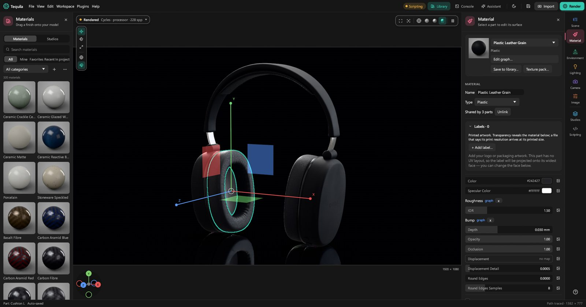
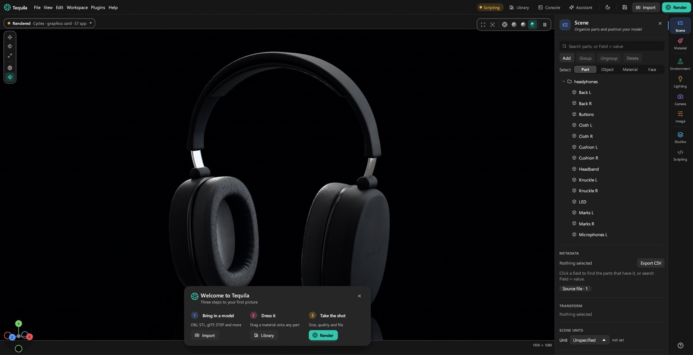
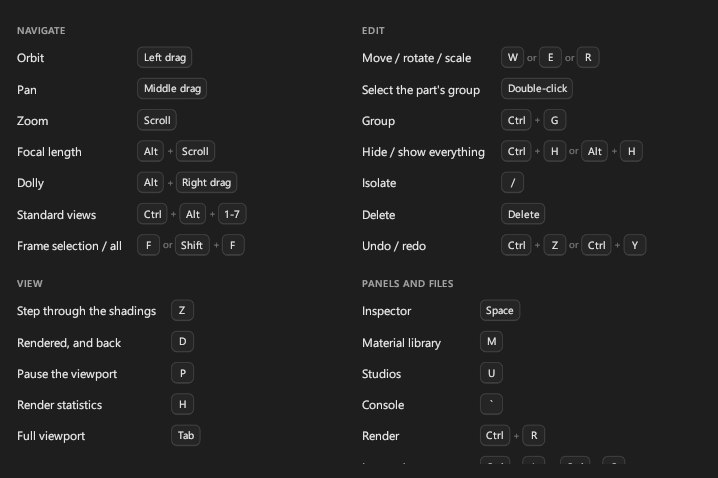
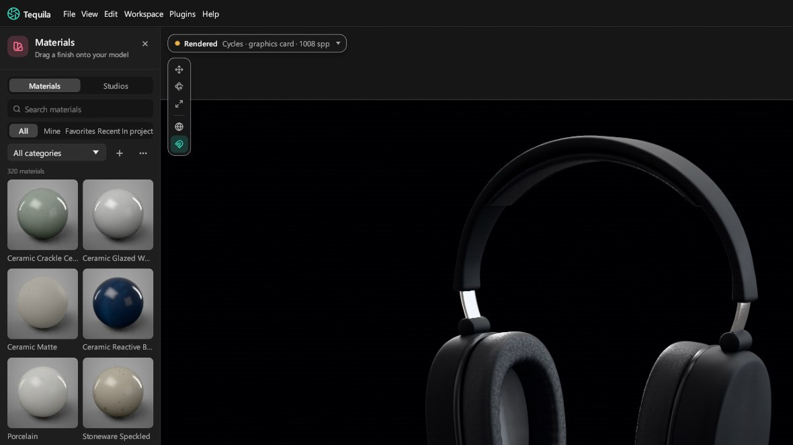
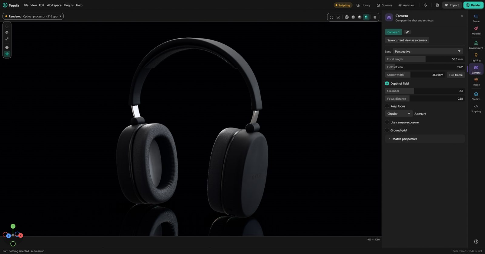
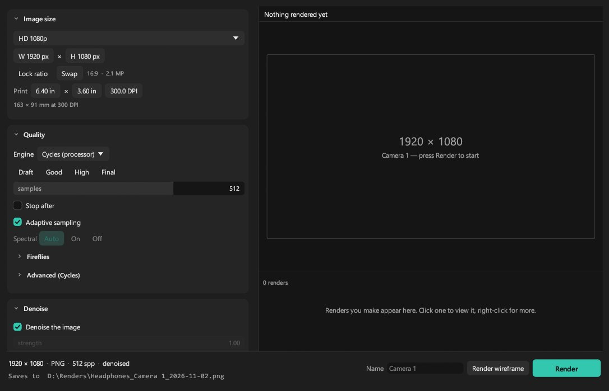

Your first renders.
Ten short lessons, in order. By the end you'll have brought in a model, dressed it, lit it and saved a picture of it. About an hour, at your own pace.
1. Find your way around
Tequila has one main window. The model sits in the viewport in the middle. The material library opens on the left, and the Inspector on the right shows the settings for whichever tab you choose on the rail at the far right.

The tabs, top to bottom, are where each kind of work happens:
- Scene: the list of parts. Select, hide, group and move them here.
- Material: the surface of the selected part.
- Environment: the light and the background.
- Lighting: the render's quality and how light travels (not where the lights are; that's Environment).
- Camera: the lens and focus.
- Image: exposure and the look of the picture.
- Studios: saved shots, colourways and turntables.
- Scripting: for scripts and AI apps.
Clicking the tab you're already on closes the Inspector. Space shows or hides it, M the library and Tab everything but the picture. The Workspace menu arranges the panels for a job in one go: Materials opens the library beside the Material tab, for example.
Tip. The first few times Tequila opens, a welcome card at the bottom of the viewport walks through the same steps as these lessons. Help › Show the welcome card brings it back.
2. Open a sample, or bring in a model
The start screen appears when Tequila opens. Its Samples are finished scenes to look around in: open one, and it arrives as a new project, so you can change anything without spoiling the original.

To bring in your own model:
- Choose File › Import model… (Ctrl+I), press Import in the toolbar, or drop the file on the window. Tequila reads STEP, IGES, Rhino
.3dm, Blender.blend(read by Blender, so it needs Blender installed), glTF and GLB, FBX, OBJ, STL, 3MF, PLY, USD (.usda,.usdcand.usdz), IFC, and the model from a KeyShot scene. - Wait for it to read. Big CAD files show their progress in the status bar. The model keeps its parts, names and colours, and the view frames it.
- Check its size. A file that doesn't say what its units are asks you once: pick the unit its numbers are in, and each choice shows how big that makes it.
- Stand it up if it's lying down. CAD models are often drawn with Z up. In the Scene tab, right-click the model and choose Turn › Upright (drawn Z up).
A KeyShot scene (.ksp or .bip) opened with File › Open project… becomes a whole new project with its materials, lighting, cameras and look. Imported instead, only its model comes in.
Tip. When you drop a file, the window says what it's about to do before you let go: import a model, open a project, add a material to your library, or put a texture pack on the selected parts.
3. Move around the viewport
- Orbit: drag with the left mouse button.
- Pan: drag with the middle button.
- Zoom: scroll. Alt+scroll changes the focal length instead, like a zoom lens.
- Frame it: F fits the selection in view, Shift+F everything.
- Standard views: click an axis on the legend at the bottom left, or the centre dot for the isometric view. Ctrl+Alt+1 to 7 do the same: front, back, left, right, top, bottom, isometric.
The four buttons at the top right of the viewport switch how it's drawn:
- Wireframe: the triangles, for checking a mesh.
- Solid: plain grey, the fastest for arranging things.
- Material Preview: a quick guess at the materials and light.
- Rendered: the real picture, path traced and getting cleaner as you watch. It's exactly what a render will look like.
Z steps through them, and D jumps to Rendered and back. P pauses the Rendered view if you want the computer for something else.

4. Select parts
- Click a part to select it. Click empty space, or press Esc, to select nothing.
- Shift+click adds a part; Ctrl+Shift+click takes one away. Ctrl+A selects everything.
- Double-click selects the part's whole group; double-click again for the group it's in.
- Right-click a part for a menu: select its group, select every part with the same material, hide, isolate, delete, and more.
The Scene tab lists every part. Click a row to select it, the eye to hide it, the arrow to open a group. Its search box finds parts by name as you type.

To get parts out of the way: Ctrl+H hides the selection, / isolates it (hides everything else) and Alt+H shows everything again.
Tip. If a model came in as one piece but has separate bits in it, right-click it: Split into N parts makes each loose piece a part of its own, so each can have its own material.
5. Put materials on
- Open the library with Library in the toolbar, or M. Each ball is a real render of the material.
- Find one. Type in Search materials (every word must match its name, category or tags), or pick from All categories: metal, plastic, wood, glass, fabric, leather and more.
- Drag it onto a part. Before you let go, the label says what it will dress, and the parts it will change are outlined.

- Dropped on a part that's selected, a material dresses the whole selection. Dropped on a group, the whole group.
- Or select the parts first and double-click the ball.
- The shelves above the balls narrow the list: Mine (your own), Favorites (click a ball's star), Recent, and In project.
Good to know. Dropping the same material on five parts gives them one shared material, so changing it changes all five. That's usually what you want. When it isn't, see the next lesson.
6. Tune a material
Select a part and open the Material tab. At the top is a little live render of the material, its name, and its Type: plastic, metal, paint, glass, fabric and so on. Below are the controls that type needs, usually a colour and a roughness to begin with.

- Change the colour. Click the swatch for a colour picker. What it shows is what renders.
- Change the roughness. Low is glossy and sharp, high is satin, then matte.
- Change the type if the material isn't the right kind of thing at all. A type keeps whatever settings carry over.
The line under the type says how many parts use this material: Shared by 3 parts, say. To change just one of them, select it and press Unlink: it gets its own copy, and the others stay as they were.
Tip. In the Rendered view the change shows as you drag. A whole drag is one step to undo.
7. Light the scene
Tequila lights the product with an environment: the world around it, which lights it and shows in its reflections. The built-in studio is a good start. The quickest way to something better is a studio preset:
- Open the library and switch it from Materials to Studios.
- Pick a studio and press Apply. It brings its lighting, camera and look, scaled to your product. The one marked Suggested suits your product's size best.
Or set the light yourself in the Environment tab:
- HDRI › Load… lights the scene with a photographed environment, an
.hdror.exrfile. Use built-in goes back to the studio. - Brightness makes it all brighter or darker.
- Transform › Rotation turns the environment round the product. This is how you move the highlights: turn it until they fall where you want.
- Background picks what shows behind the product: the Environment itself, a plain Color, or a Backplate picture.

Tip. The map at the top of the tab shows the environment's lights. Drag one to move it, scroll over it to change its size, double-click the sky to add one. The pins lesson goes further.
8. Frame the shot
The viewport is the camera: frame the product as you want the picture. The darker border is the render frame, the shape your picture will be, with its size beside it.
- Set the shape first. The frame follows the picture size you choose in the Render window (next lesson), so a square picture shows a square frame.
- Choose a focal length in the Camera tab. Product shots usually look best with a long lens, 70 to 135 mm: it flattens the product the way catalogue photos do. Alt+scroll changes it in the viewport.
- Keep the view. Orbiting moves the camera you're looking through. When a view is right, press Save current view as a camera, and click its name in the list to come back to it.

9. Render a picture
- Press Render, the green button at the top right (Ctrl+R). The Render window opens.
- Pick a size under Image size: HD 1080p, 4K UHD, Square, Portrait 4:5, Story 9:16, a web banner, A4 at 300 DPI, or your own width and height.
- Pick the quality under Quality. Draft is quick for checking, Good is the usual choice, and High and Final are for pictures that matter. Each takes longer.
- Check where it saves. The line at the bottom says the folder and file name; File changes them and the format: PNG, JPEG, TIFF, EXR or PSD.
- Press Render. The picture appears as it finishes. You can close the window and keep working: renders carry on in the background and wait in a queue.

Good to know. A render never overwrites a file. If the name is taken, it adds _2, and the line at the bottom already shows the name it will use.
10. Save, and come back later
- File › Save (Ctrl+S) keeps the whole scene in a
.tequilaproject: the model, materials, labels, light, cameras and render settings, with a picture of the view for the start screen. - File › Open recent and the start screen list your last projects.
- Tequila also keeps your work safe on its own, every five minutes. If it ever closes unexpectedly, the next launch offers Recover unsaved work.
- Edit › Undo (Ctrl+Z) names the step it will take back. Every click, drag and drop is one step.
That's the basics. You can bring in any model, dress it, light it and render it.
Stuck on a step? Ask on the Discord.
Join the Discord